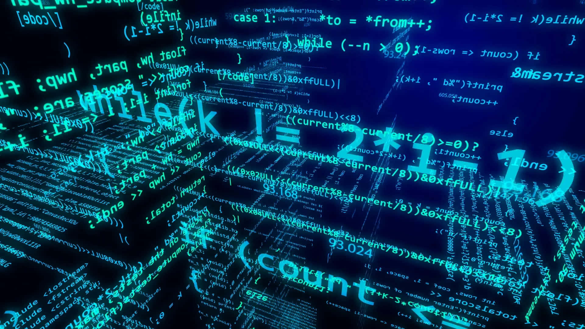

About US
Coding, often referred to as programming, is the art of communicating with computers to create software, websites, apps, and more. It is a universal language that bridges the gap between human creativity and machine precision. By writing lines of code, developers can solve complex problems, automate tasks, and bring innovative ideas to life. In today’s digital age, coding is more than just a technical skill—it’s a tool for empowerment. It enables individuals to build solutions that impact industries like healthcare, education, entertainment, and beyond. From designing user-friendly apps to developing artificial intelligence, coding is at the heart of technological progress. Learning to code fosters critical thinking, problem-solving, and creativity. It’s not just about writing syntax; it’s about understanding logic and finding efficient ways to achieve goals. As technology continues to evolve, coding remains a vital skill, shaping the future and opening doors to endless possibilities. Whether you're starting your coding journey, upskilling, or want to make a career in artificial intelligence, data science in this rapidly evolving tech world, staying ahead requires mastering the right programming language in 2025. The top programming langauges include Python, JavaScript, Java, C#, C++ etc. as these are high in demand and are most popular programming languages.
